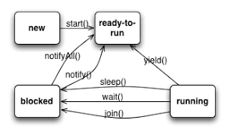
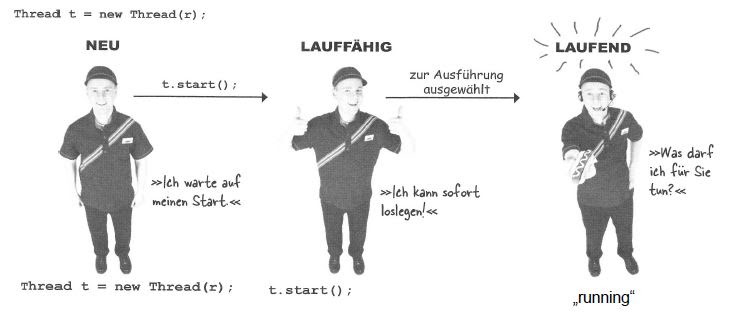
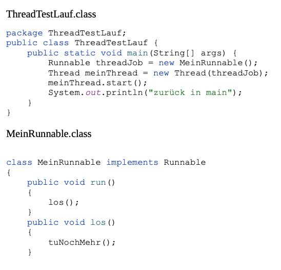
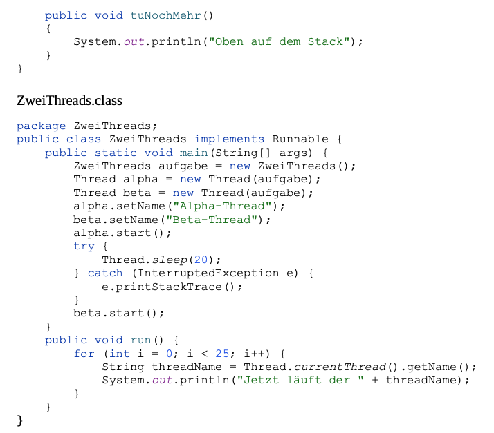
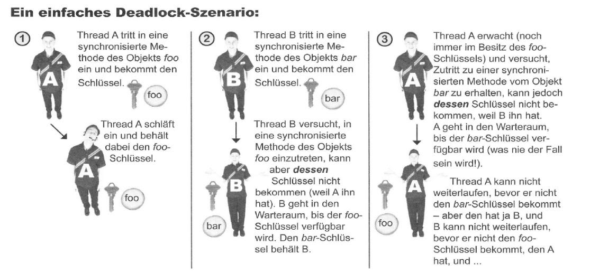
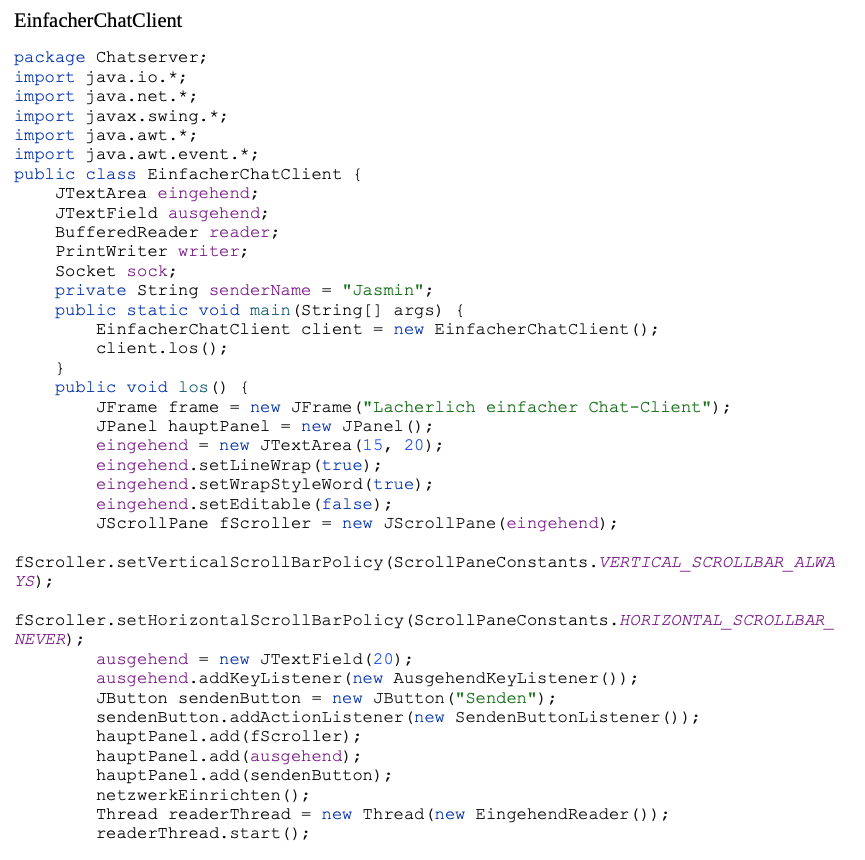
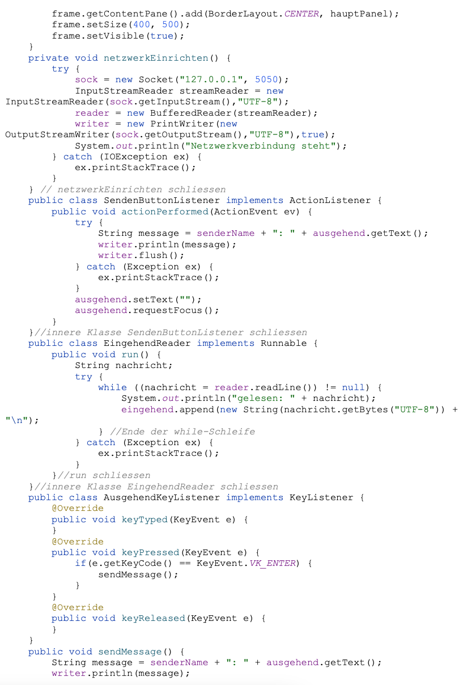
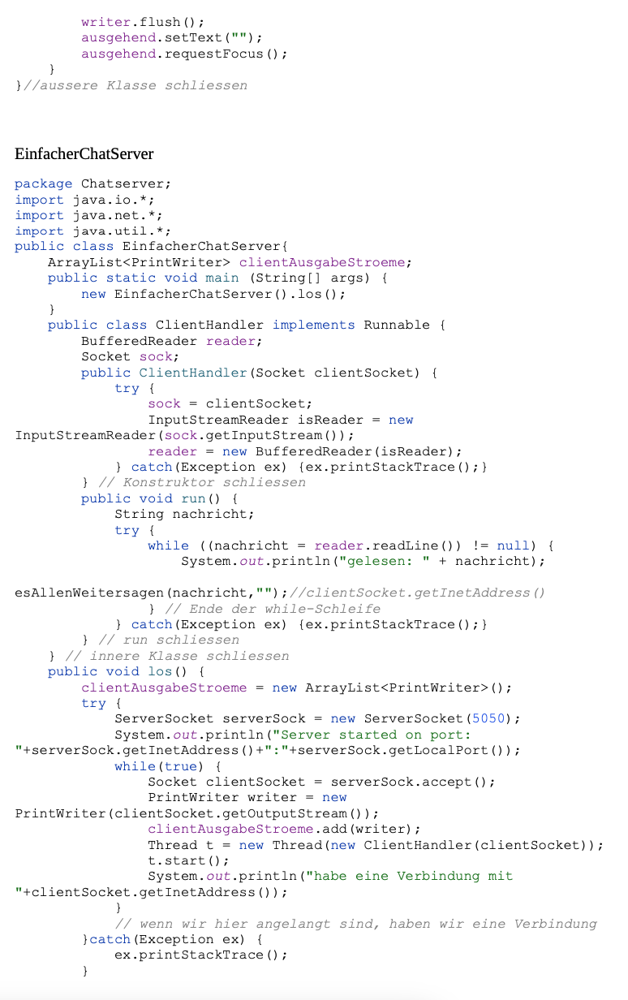

Die dritte und vierte Vorlesung
Threads
Threads sind unabhängige Ausführungseinheiten innerhalb eines Programms, die gleichzeitig arbeiten können. Durch sie kann man Aufgaben parallel ausführen und damit die Effizienz des Programmes verbessern! Threads teilen sich den Speicherbereich eines Prozesses. Sie können verschiedene Zustände annehmen:
Neu, Lauffähig, Laufend

Hier sieht man die verschiedenen Zustände, die die Threads annehmen können. Neu, Laufbereit, Laufend und Blockiert auf Deutsch. Der neue Thread kann gestartet werden, wodurch er dann „aktiv“ ist und dann ausgeführt werden kann, indem er in den Laufend Zustand gebracht wird. Threads die gerade nicht lauffähig sind, sind blockiert.

Thread Scheduler
Der Thread Scheduler versetzt lauffähige Threads in den laufenden Zustand. Der Thread Scheduler entscheidet, welcher Thread ausgeführt wird und für wie lange, basierend z.B. auf Prioritäten. Ziel von ihm ist es, den Prozessor so effizient wie möglich zu nutzen, man kann den Scheduler aber nicht kontrollieren, daher schreiben wir dazu unabhängige Programme, die Threads in den Zustand blockiert bringen können, sodass sie kurz aussetzen.
Übung Thread Testlauf
Hier haben wir eine Übung mit Threads gemacht:


Nebenläufigkeitsprobleme
Nebenläufigkeitsprobleme sind ein Beispiel von Threadproblemen. Dabei geht es darum, dass zwei Objekte auf die gleiche Datei zugreifen wollen, wodurch die Daten verändert werden.
In der Vorlesung hatten wir das Beispiel von Reiner und Monika: Sie wollen beide Geld vom gemeinsamen Konto abheben, bei der Transaktion schläft Reiner aber ein, sodass beide denken, sie haben den Anfangsbestand auf dem Konto zur Verfügung, dann kann es passieren, dass das Konto überzogen wird, weil beide gleichzeitig Geld abheben.
Als Lösung könnte man alle neuen Transaktionen blocken, wenn noch eine gerade durchgeführt wird. In Java nutzt man dafür „synchronized“. Nur ein Thread kann auf eine Methode zu einer Zeit zugreifen.
Deadlocks
Dazu gibt es auch noch Deadlocks als Threadprobleme, synchronisierte Methoden blockieren sich gegenseitig. Mehr dazu im Bild unten:

Erzeuger/Verbaucher-Problem
Zu allerletzt gibt es noch das Erzeuger/Verbraucher Threadproblem. Zwei Threads tauschen Daten aus, der „Verbraucher“ will schon auf eine Datei zugreifen, die es aber noch nicht gibt oder noch aktualisiert werden muss. Dabei werden die Daten verändert. Die Kommunikation zwischen den Threads, wie durch die Methoden wait, join und notify, ermöglichen es den Threads untereinander sich auszutauschen.
Abgabe Chat-Server
Unsere Übung war dieses Mal einen Chat-Server aufzubauen. Et voila:


